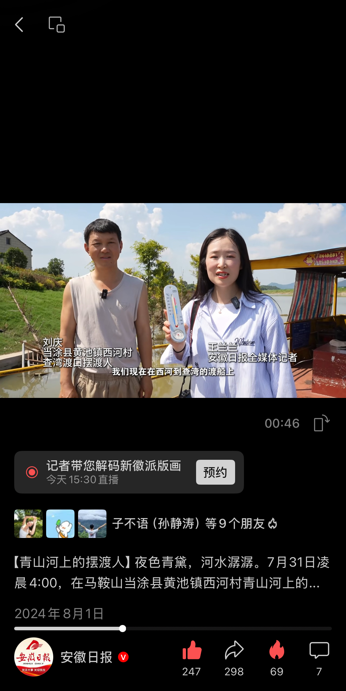

完整版视频作品，敬请期待更新...
我的视频创作理念
视频是当今最有力的叙事媒介之一。我致力于通过精心设计的镜头语言、节奏把控和后期剪辑，创作出既有视觉冲击力又有情感深度的视频作品。无论是短小精悍的短视频，还是深度挖掘的纪录片，我都追求内容与形式的完美结合。
在创作过程中，我特别注重前期策划和脚本撰写，确保每个镜头都有其存在的意义。后期剪辑上，我善于运用音乐、音效和色彩调校来强化情感表达，让观众不仅能"看到"故事，更能"感受"到故事。